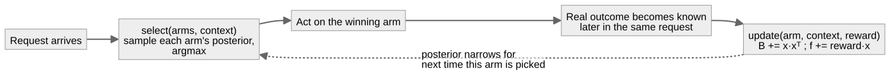
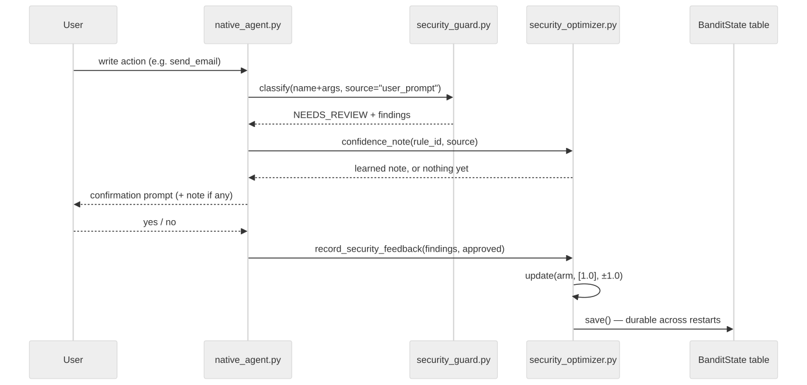

Kalkee — RL Algorithms, Flow, and the Math
Every learning loop in this system, with the actual formulas each one
computes. This complements README_ARROW_DIAGRAMS.md (pictures, no
math) and README_EXPLAINED.md (prose, line-by-line code walkthrough).
Worth knowing if you're comparing against other routers/gateways:
OpenRouter's own docs describe deterministic price/latency-weighted
provider selection, and LiteLLM's router picks from explicit named
strategies (least-busy, cost-based) — neither maintains a learned
posterior that updates from real outcomes the way every algorithm below
does. CrewAI and AutoGen/AG2 have no built-in adaptive routing either
(the "RL" that turns up searching either one is a separate external
training project, not a native routing capability). See README.md's
"How Kalkee compares" table for the full picture.
0. The formal objective everything below approximates
Reinforcement learning, in general, seeks a policy π maximizing expected discounted return:
π* = argmax_π E[ Σ_t γ^t R_t ]
Every bandit in this codebase is the γ → 0 special case: a single
decision, one immediate reward, no multi-step planning. That's a
deliberate scope choice (see gmaofn/router.py's module docstring) — a
full MDP solver (Q-learning, PPO) over an entire multi-turn task is the
natural next step and is left as a pluggable strategy, not implemented
twice. The one place this repo does something genuinely closer to
full RL is the nightly PEFT fine-tune (§7 below), which updates real
model weights rather than picking between existing options.
1. The shared primitive — linear contextual bandit via Thompson Sampling
Source: Agrawal & Goyal, "Thompson Sampling for Contextual Bandits with
Linear Payoffs," ICML 2013. Implemented once in gmaofn/bandit.py's
LinearBanditCore, reused by every layer in §2-§6 below.
Model. For each arm a, maintain a Bayesian linear regression posterior over "reward given context vector x":
reward | x ~ N(θ_aᵗx, σ²)
θ_a ~ N(μ_a, ν² B_a⁻¹)
State kept per arm (accumulated from every past (x, reward) pair
that arm has actually received):
B_a = Σ x xᵗ + λI (λ = ridge prior strength — LinearBanditCore's `ridge`)
f_a = Σ r·x
μ_a = B_a⁻¹ f_a (posterior mean)
Selecting an arm (LinearBanditCore.select): for every candidate
arm, sample a fresh weight vector from its own posterior and score the
current context against it —
θ̃_a ~ N(μ_a, ν² B_a⁻¹) (ν = exploration_scale)
choose argmax_a θ̃_a · x
Sampling — rather than always using μ_a directly — is what gives
Thompson Sampling its exploration: an arm with a wide (uncertain)
posterior occasionally wins even when its mean looks worse, so it keeps
collecting data instead of being starved by one early bad outcome. As
more (x, reward) pairs accumulate, B_a grows, the posterior narrows,
and the sampled θ̃_a converges toward the true μ_a.
Updating after an outcome (LinearBanditCore.update):
B_a ← B_a + x xᵗ
f_a ← f_a + r·x
Cold start. ensure() seeds a brand-new arm's posterior mean at a
hand-designed seed_utility while leaving the posterior width at its
widest (B_a = λI) — a prior that's easily overridden by the first few
real outcomes, never a claim of actual evidence.
The loop, pictured — every one of §2-§7 and §11 below is this exact shape, just a different arm set/context/reward:

Persistence (app/framework/bandit_persistence.py, new) — every
arm's (B, f) is small enough to snapshot into the same PK/SK document
store OAuthConnections/ChatSessions already use (a new BanditState
table — see README_DATA_MODEL.md), so learning survives a process
restart instead of resetting to a blank prior every redeploy. §11's
security_optimizer is the first, currently-wired example
(LinearBanditCore.to_state()/load_state() do the actual (de)serialization);
any of §2-§7 can adopt the identical two-call pattern
(bandit_persistence.load(name, self._core) in __init__,
.save(name, self._core) after update()) with zero changes to this
module.
2. Agent routing — gmaofn/router.py
Picks which registered agent should handle a task, once per completed task (not per model call).
Context vector TaskContext.as_vector() — 6 features:
x = [ complexity(0-1),
context_size / 8000 (clamped to 1),
latency_requirement_s / 60 (clamped),
budget_usd / 5 (clamped),
requires_rag(0/1),
len(required_capabilities) / 5 (clamped) ]
Cold-start prior — before an agent has any observed reward, its posterior mean is seeded from a hand-designed utility score:
U(a|T) = w1·Q(a,T) + w2·R(a) + w3·C(a,T) + w4·F(a,T) − w5·Cost(a) − w6·Latency(a)
w1=0.30 (predicted quality) w2=0.20 (historical reliability)
w3=0.25 (capability match) w4=0.10 (feedback-derived performance)
w5=0.10 (cost) w6=0.05 (latency)
Reward — see §7's R formula below, computed per agent using its
Shapley-attributed share (§6) when multiple agents jointly worked the
task.
3. Framework picker — agent/framework_stats.py
Picks native vs LangGraph vs ADK for the next incoming task. Same Thompson Sampling core, softmax-flavored arm scoring over each track's observed (latency, error) history for same-shaped tasks — every track implements the identical §6.1 algorithm (the §6.5 equivalence requirement), so this bandit is purely picking the fastest/most-reliable implementation of the same behavior, never trading off correctness.
4. Generation-parameter tuning — llm/optimization_router.py
Picks a real combination of request-level generation parameters (temperature/top_p/max_tokens) on every single model call — the fastest-cycling bandit in this repo.
Context — 2 features, one-hot on tier:
x = [ 1.0 if tier == "realtime" else 0.0,
1.0 if tier == "bulk" else 0.0 ]
Arms — balanced (no override), low_latency (greedy, capped
tokens), high_quality (warmer sampling, longer budget). Namespaced
"{provider}::{arm}" internally so one shared LinearBanditCore
learns each provider's own posterior independently.
Reward:
norm_latency = min(latency_ms / latency_budget_ms, 1.0)
reward = (1.0 if ok else −0.5) − 0.5 · norm_latency
5. Tool-schema size — llm/token_optimizer.py
Picks how many tool schemas to send to the local Ollama rung only — every other provider is untouched.
Context — 2 features:
x = [ optional_tool_count / 40 (clamped),
message_word_count / 60 (clamped) ]
Arms: full (no cut), top12, top6, top3 — ranked by keyword
overlap with the user's message; DESTRUCTIVE + every MCP tool are a
guardrail floor, never counted against the cut.
Reward, computed once the real turn outcome (not just the HTTP call) is known:
saved_frac = max(0, (tokens_before − tokens_after) / tokens_before)
reward = (1.0 if success else −0.5) + 0.3 · saved_frac
6. RAG source + algorithm — gmaofn/rag_optimizer.py
Picks which knowledge store AND which retrieval algorithm to use for a given query.
Context — 2 features:
x = [ candidate_arm_count / 10 (clamped),
query_word_count / 30 (clamped) ]
Arms — every real "{store}::{algorithm}" combination, e.g.
pm-index::hybrid, default::lexical_rerank. Algorithms:
vector— pure embedding-similarity ranking (as the store returns it)lexical_rerank— re-ranks a wider candidate pool by real keyword/Jaccard overlap with the queryhybrid— blended score:0.5 · (vector_score / max_vector_score) + 0.5 · lexical_overlap
Reward:
reward = −0.5 if n_hits == 0
= 1.0 if success else −0.2 otherwise
An empty retrieval is penalized regardless of anything else that happened — a store/algorithm pair that finds nothing is a bad pick no matter what the rest of the turn did.
7. Local vs hosted model — llm/hybrid_router.py
Picks, per message, whether to prefer the free local SLM or a hosted model — "Hybrid" mode in the UI.
Context — 3 features:
x = [ word_count / 50 (clamped),
clause_count / 4 (clamped),
1.0 if tier == "delay_ok" else 0.0 ]
Arms: local (prefer Ollama) vs hosted (no override — the
normal chain already tries hosted rungs first).
Reward, asymmetric on purpose:
reward = 1.0 if arm == "local" and success
= −0.6 if arm == "local" and not success
= 0.5 if arm == "hosted" and success
= −0.3 if arm == "hosted" and not success
A local success outranks a hosted success (free AND it worked); a local failure is penalized harder than a hosted one — routing something local couldn't handle wastes a whole turn a hosted model would likely have gotten right the first time.
8. Multi-agent credit — the Shapley value
Source: Lloyd Shapley, 1953 (2012 Nobel Memorial Prize in Economic
Sciences, cooperative game theory). Used in gmaofn/shapley.py to split
ONE observed task reward fairly across however many agents jointly
produced it, before that credit reaches each agent's bandit posterior
(§2) — without this, a naive scheme either dumps the whole reward on the
last agent in a pipeline, or splits evenly regardless of actual
contribution.
For a coalition of agents N with characteristic (value) function v(S) — "how good is the outcome if only the agents in subset S had participated" — agent i's Shapley value is the average of its marginal contribution over every possible arrival order:
φ_i(v) = Σ_{S ⊆ N∖{i}} [ |S|! (|N|−|S|−1)! / |N|! ] · ( v(S ∪ {i}) − v(S) )
Characteristic function — a noisy-OR over each agent's standalone quality (superadditive: two mediocre agents together are worth more than either alone, but not simply their sum):
v(S) = 1 − Π_{i ∈ S} (1 − quality_i)
Computed exactly (2ⁿ subsets) up to _EXACT_LIMIT agents; beyond that,
the standard Monte Carlo permutation estimator — shuffle agent order,
accumulate each agent's marginal contribution as it's "added" to the
running coalition, average over many shuffles — the same approximation
SHAP and other applied-Shapley tools use at scale.
9. Reward + adaptive weights — gmaofn/reward.py
The task-level reward every Shapley-attributed share (§8) feeds into agent routing (§2):
R = α·Quality + β·Success + γ·UserFeedback − δ·Cost − ε·Latency − ζ·Failure
α..ζ (RewardWeights) start at 0.30 / 0.25 / 0.20 / 0.10 / 0.10 /
0.05 and are adaptively updated, REINFORCE-style, rather than fixed
forever:
AdaptiveWeights.update(outcome, R):
each coefficient drifts toward whichever term most consistently
co-occurred with a HIGH R, and away from whichever co-occurred
with a LOW one, then all six are renormalized so they always sum
to 1 (a probability simplex over "what matters right now")
Deliberately simple and auditable — weights.snapshot() lets an
operator see exactly why routing shifted, rather than a second
black-box model layered on top of the router's own bandit.
10. The one non-bandit loop — nightly PEFT fine-tune
scripts/finetune_local_slm.py is a different kind of learning
entirely: real gradient descent on real model weights (LoRA adapters),
not a routing choice among fixed options.
Per-turn reward (app/agent/finetune_log.py), computed once, at
log time, from a simple deterministic heuristic:
reward = 1.0
reward -= 0.3 if the turn needed a retry (output_guard rejected the
first attempt)
reward -= 0.5 if the turn was flagged out_of_scope
reward = clamp(reward, 0, 1)
Reward-weighted loss — the "RL-informed" half of "reward-weighted supervised fine-tuning," a CPU-tractable stand-in for full online RL (PPO-style rollouts, which need a live reward model and thousands of rollouts per update — not remotely practical without a GPU):
per_example_loss_i = standard cross-entropy on the assistant's
final turn only (loss masked to -100 elsewhere)
weighted_loss = Σ_i (per_example_loss_i × reward_i) / Σ_i reward_i
A reward-1.0 example teaches more than a reward-0.7 one; nothing below
the --min-reward threshold (default 0.7) is used at all.
Promotion gate — the trained result never reaches production on its
own reward alone; it must also beat the currently-served model on the
candidate-selection harness (scripts/eval/regression_gate.py, see
README_ARROW_DIAGRAMS.md §9/§11) before being registered.
11. Security findings — app/security_optimizer.py
The newest layer, and the only one wired into §1's persistence
mechanism today. Unlike §2-§7, this one deliberately does NOT decide an
action — it only learns a CONFIDENCE NOTE on top of a decision
app/security_guard.py already made deterministically. See
README_CYBERSECURITY.md for the full threat model this protects
against.
Arms: "{SEC-rule-id}::{source}" — one posterior per (deterministic
rule, text surface) pair, e.g. "SEC-UNAUTHORIZED-ACTION::user_prompt".
Context: constant [1.0] — no per-call features yet (unlike §2-§7's
query-length/latency-shaped contexts); the bias term alone is the whole
learned estimate for now.
Reward — real, not synthetic, and narrower in scope than any other layer here: only a write action whose confirmation prompt carried a 🟡 NEEDS_REVIEW finding produces a signal at all, from the user's actual yes/no answer to THAT confirmation:
reward = +1.0 if the user answered "no" (declined) —
evidence the flagged rule actually mattered
reward = −1.0 if the user answered "yes" (proceeded anyway) —
evidence it was a nuisance for this case
What it's NEVER used for: deciding whether a rule fires (that's
security_guard.py's sole, deterministic authority), or anything at the
🔴 RISK tier (RISK blocks outright, before a confirmation prompt — and
therefore before this layer — is ever reached). confidence_note()
only ever ADDS a parenthetical to an existing confirmation prompt; it
never changes whether one is required.

12. Provider ordering — llm/provider_optimizer.py
Closes a real gap the earlier revision of this file's own §"Model tiers"
documentation carried: CHAINS (llm/router.py) — "realtime: Luna →
Groq → Deepseek → Ollama → rule-based" — used to be the LIVE fallback
order, not just a cold-start default. Every call for a given tier tried
the exact same provider first, forever, regardless of which one had
actually been fastest/most reliable in practice — a real, hand-written
rule masquerading as "the router decides." This layer makes it actually
decide.
Arms: "{tier}::{provider}" — one posterior per (tier, provider
registry key) pair, e.g. "realtime::groq". The deterministic rule
floor is NEVER an arm — record_outcome() ignores it outright, and
order() always places it last regardless of any other arm's sampled
score, so a cold or unlucky posterior can never rank the non-LLM
fallback ahead of a real model.
Context: constant [1.0], same shape as §11's security layer — no
per-call features yet.
Selection — a full RANKING, not just one winner: every candidate
provider gets ONE fresh Thompson-Sampled draw from its own posterior,
and the whole chain is sorted by that sample, highest first —
LinearBanditCore.select()'s single-winner logic, extended to "what
order should we try ALL of these in." Cold-start seed_utility biases
toward the ORIGINAL CHAINS position (earlier in the hand-written list
seeds higher), so a freshly-deployed system's behavior matches today's
list exactly, and only drifts once real evidence justifies it.
Reward — real HTTP-level success/failure from TierClient.chat()'s
own try/except, plus a real (capped) latency penalty, mirroring §7's
local-vs-hosted shape:
reward = 1.0 if the call succeeded
reward = −1.0 if it raised (network/5xx/timeout)
reward −= min(latency_ms / 10_000, 0.3) (capped latency penalty either way)
What this NEVER overrides: an explicit preferred (a user's own
model pick via the UI, or Hybrid mode's §7 local/hosted choice) is
applied AFTER this reorder and still wins outright, unconditionally —
this layer only decides the order of the REST of the chain, the
fallback behind whatever was explicitly requested.
A real bug this surfaced and fixed along the way: wiring this in
required threading the provider's REGISTRY key ("luna", "ollama")
through TierClient.chat()'s loop instead of the provider's .name
display string ("gpt-5.6-luna", "ollama-llama3.2:1b") — two different
namespaces that were being silently compared against each other
(p.name == self.preferred) for the preferred_timeout/
preferred_escalated checks. Since self.preferred is always a
registry key, that comparison was False for every BUILT-IN provider,
meaning Hybrid mode's own escalation-timeout mechanism (§7) had never
actually been shortening Ollama's timeout, and
finetune_log.log_hybrid_escalation_turn() had never actually been
firing — a real, silent gap in a previously-shipped feature, closed as
a side effect of giving this layer a consistent key to work with.
Summary table
| # | Layer | Arms / decision | Context dims | Reward formula | Persisted? |
|---|---|---|---|---|---|
| 2 | Agent routing | any registered agent | 6 | Shapley-attributed R (§9) |
No |
| 3 | Framework picker | native/langgraph/adk | latency/error history | softmax over same | No |
| 4 | Generation params | balanced/low_latency/high_quality | 2 | (1 or −0.5) − 0.5·norm_latency |
No |
| 5 | Tool-schema size | full/top12/top6/top3 | 2 | (1 or −0.5) + 0.3·tokens_saved_frac |
No |
| 6 | RAG source+algorithm | every store×algorithm pair | 2 | −0.5 if empty, else 1 or −0.2 |
No |
| 7 | Local vs hosted | local/hosted | 3 | 1 / −0.6 / 0.5 / −0.3 |
No |
| 10 | Model weights (PEFT) | (not a bandit) | — | reward-weighted cross-entropy | Yes (checkpoint on disk) |
| 11 | Security findings | "{SEC-rule}::{source}" |
1 (constant) | +1.0 declined / −1.0 approved |
Yes (BanditState table) |
| 12 | Provider ordering | "{tier}::{provider}" |
1 (constant) | ±1.0 success/failure, minus a capped latency penalty |
Yes (BanditState table, throttled) |
Rows 2-7 all reuse the exact same LinearBanditCore math (§1); only the
arm set, context features, and reward formula differ. Row 10 is genuine
weight-space learning and is deliberately the slowest, most expensive,
most gated of them all. Rows 11 and 12 are the two bandit-shaped rows
with durable persistence wired up today (§1's "Persistence" note) — row
12 throttles its saves (every 20 updates, not every call) since it
updates on EVERY LLM call, far more often than row 11's confirmation-
driven updates; rows 2-7 can adopt the identical persistence mechanism
without any change to bandit.py/bandit_persistence.py.